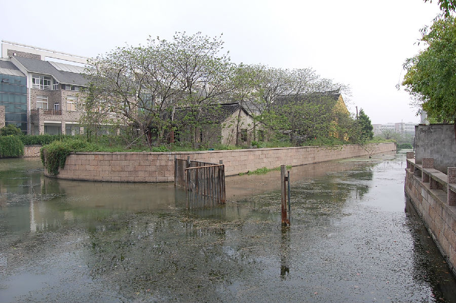

嘉兴市文物保护网 · 市级文物保护点 · 2020-11-09 · 原文

分水墩位于嘉兴市南湖区解放街道芦席汇大运河嘉兴段河道内，东为端平桥，西为北丽桥，北为嘉禾北京城。分水墩系一小岛，呈东北、西南走向，面积约2850平方米，处于大运河和秀水的交汇处。据地方志记载，此墩唐以前即有，是开浚城河时有意留下的土堆或堆土而成的，它对于减缓大运河的水流有一定作用，是古运河上的一种水利设施。唐神龙二年（706），墩上建水天庵，保佑过往船只平安，成为一方名胜。水天庵后屡毁屡修， 2002年重建水天庵。明清时这里曾是一个很热闹的蔬菜集散地。分水墩早年曾做为分流古运河的一种水利设施，曾经发挥过巨大的作用，对研究古代的水利措施具有重要意义。2009年公布为嘉兴市文物保护点。